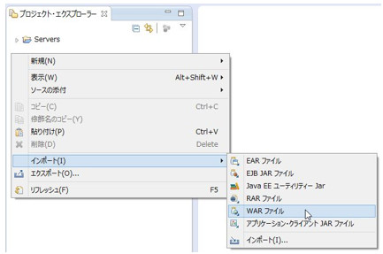
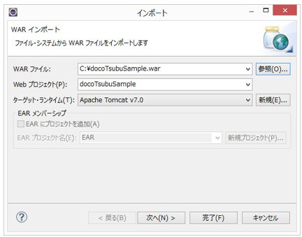
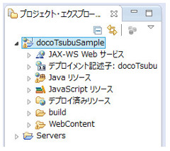
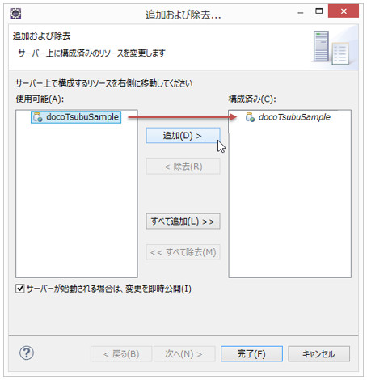

どこつぶサンプルの取り込みと実行
取り込み方法
-
プロジェクト・エクスプローラーの空いている箇所で右クリック→インポート→WARファイルを選択します。

-
開いた画面で、「参照」ボタンをクリックし、「docoTsubuSample.war」を選択し、「完了」ボタンをクリックします
（docoTsubusSample.warは「どこつぶのサンプル」ディレクトリにあります）

※上図はdocoTsubuSample.warがCドライブ直下にコピーした場合の例
※先にサーバを作成しておいてください（ターゲット・ランタイムがApache Tomcat v7.0であることを確認してください）
-
プロジェクト・エクスプローラーに動的Webプロジェクト「docoTsubuSample」が追加されます。

※アプリケーション名が「docoTsubu」ではなく「docoTsubuSample」なので注意してください。
-
サーバビューでサーバを右クリック→追加および除去を選択します。開いた画面（下図）で「docoTsubuSample」をサーバに追加し、「完了」ボタンをクリックします

実行方法
以下のいずれかの方法で実行します。
- ブラウザを起動し「http://localhost:8080/docoTsubuSample/」にリクエストする
- 動的Webプロジェクト「docoTsubuSample」を選択して、右クリック→実行→サーバーを選択する（Eclipseの実行機能）
マニュアルトップへ戻る